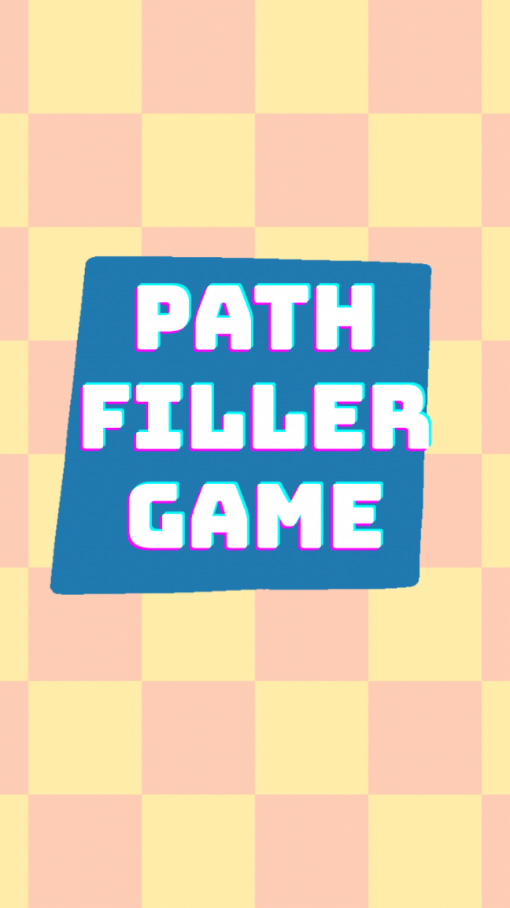
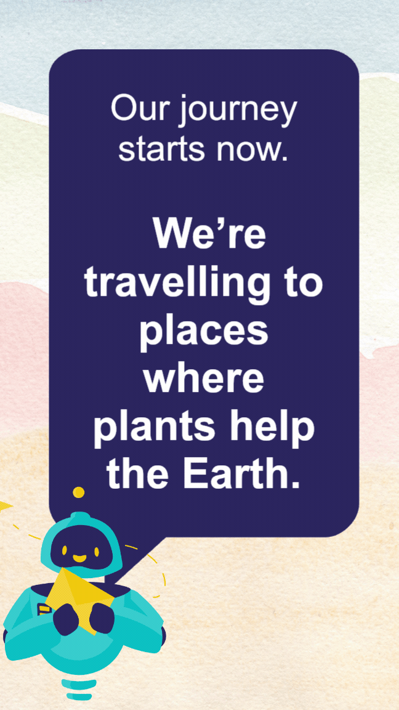

Study information
Please read this information before deciding whether to take part.
Invitation and purpose
You are invited to take part in a research study about how people experience visual environments while playing a one-line puzzle game. The study compares versions of the game with different background scenes.
What will I do?
You will use a mobile phone to play the puzzle game. The game records gameplay time, puzzle scores and progress, touch interactions, errors, and attempts. Before starting, you will view a short introduction, complete two practice puzzles, and see the time commitment for your selected experiment on the study setup page.
Taking part is your choice
Taking part is voluntary. You may stop at any time by leaving the game. Choosing not to take part, or stopping, will not affect your studies or relationship with your school or university.
Possible discomforts and benefits
You may experience mild eye strain or frustration while using the phone or solving puzzles. You can take a break or stop. There may be no direct benefit to you; the findings may help researchers understand responses to different visual environments.
Privacy and data
Experiment 1 does not ask for a name, sign-in, or code entry. The game automatically assigns a numeric study number and records the assigned condition, consent confirmation and time, session start date and time, gameplay timing and progress, touch actions, errors, attempts, and three background questions. Experiment 2 uses a participant code to save progress between visits. In this prototype, records stay in the browser until downloaded; this is not a secure research database. Do not use this prototype to collect real participant data.
Study title: [Insert approved study title]
Researcher and institution: [Insert name and affiliation]
Questions or withdrawal: [Insert researcher contact details]
Ethics approval: [Insert committee name and approval reference]
This participant information page is a draft. Have the study team and ethics committee approve it before recruitment.
Consent form
Your choice is voluntary. Please select one option.
Consent to take part
I confirm that I have read the study information, understand that I may stop at any time, and have had the opportunity to consider whether I want to participate.
This consent form is a draft. Use it only after the approved wording and contact details have been added.

Try a practice path
Start at S, trace through every square, and finish at E.
0 / 4 squares
Touch S and drag through adjacent squares to E.
Would you like to practise again, or are you ready to start the study?
Canopy Paths
Trace a continuous path through every green square.
Study session setup
Research view can preview all four combinations. Participant view locks the assigned combination. Balanced assignment across participants requires the study server.
Levels 1–5 form one stop and one mission with a shared 3-minute visible-time limit. Story slides show once at the start; finishing the five levels goes to unused extra paths or the next stop. Extra paths have no story slides. Levels 6–10 each have a 2-minute stage; Levels 11–20 each have a 3-minute stage. Each has its own stop story; extra paths use the same background and never repeat for a participant. When a stage timer expires, the current puzzle is recorded unfinished and play continues. Experiment 1 needs no participant code. Experiment 2 saves progress and remaining stage time across the 14-day window; use the same participant code and browser on the same phone.
Please set your phone brightness to 60–80% before each visit. This is self-reported; the game cannot read or verify your phone’s brightness setting.
Prototype mode stores events only in this browser. Do not collect real participant data with this build.
Matched scene pairs
Four pairs are loaded from eight images: Pair 1 is the table/vase scene; Pair 2 is the arched plant wall; Pair 3 is the greenhouse arch; Pair 4 pairs the leafy wall with a simplified neutral wall and pottery image. Each pair appears in the same five level slots in both conditions. Every participant sees the assigned version of each pair five times across Levels 1–20.
To replace images, update the pair paths in config.js and keep the green/non-green counterparts in the same pair. The pair schedule in stimulusPairOrder has 20 entries and should contain each pair ID exactly five times.
Participant condition allocation must be randomized securely by the deployed study server. Set fixed brightness equally for both conditions.

MISSION COMPLETE
PLANT SEED
You completed the mission in time.
Cover every square
Paused
About the game background
Please answer these questions about the background you saw while playing.